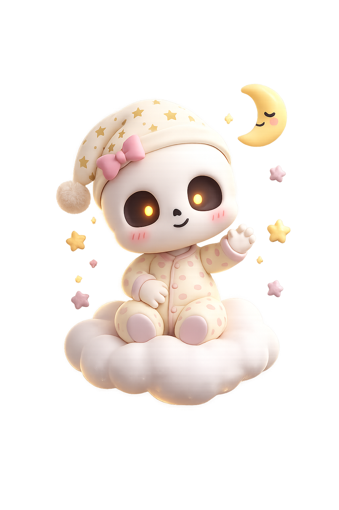

What am I?
A small cloud spirit with a big telescope and a very soft heart.
Specimen:
Spirito-Cumulus
Meet Nimbus Moonwhisper — a sleepy cloud spirit with a big telescope, a very soft heart, and an observatory above the stars.

Nimbus was born on the quietest cloud in the sky. As the observatory’s sole Junior Dream Astronomer, Nimbus dedicates each night to listening for quiet whispers from sleepy dreamers, weaving them into constellations, and ensuring every wanderer finds their way home.
A small cloud spirit with a big telescope and a very soft heart.
Spirito-Cumulus
I chart constellations, collect wishes, and make the night feel friendly.
Starlight Navigation
I sneeze a little star whenever someone tells me a happy story.
A few essential instruments kept inside the Midnight Observatory.
Crafted from hand-turned brass and moonlight glass. Frequently misplaced under fluffy cloud blankets, but always polished with stardust before twilight.
Bound in lavender linen. Contains star coordinates, bedtime lullaby chords, recipe notes for warm chamomile dew, and sketches of curious comets.
A cozy wooden shelving nook where whispered hopes from sleepy earthbound dreamers are safely organized and distilled into bright guiding constellations.
“Even your smallest wish matters. Keep looking up. ♡”
Nimbus sneezed five glittering stars in joy just for you.